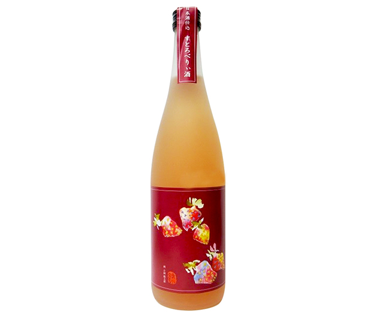

Sake Strawberry 720ml

Mô tả:Đây là loại sake được chiết xuất từ quả dâu tây từ trang trại Morita ở Hokota-shi tỉnh Ibaraki Nhật Bản,
vị ngọt nhẹ, màu đỏ tự nhiên, không sử dụng phẩm màu, ngon hơn khi uống lạnh, có thể dùng để pha cocktail, phù
hợp với chị em phụ nữ
Độ cồn:8-9%
Giá : Liên Hệ
<<quay lại